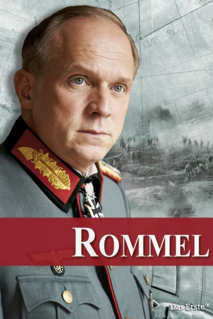

#9200 Rommel
 
 IMDB-Wertung: 6.5 / 10
IMDB-Wertung: 6.5 / 10  Metascore: 0
Metascore: 0 
März 1944. Feldmarschall Erwin Rommel ist als Oberbefehlshaber der Heeresgruppe B an der französischen Atlantikküste stationiert, wo die Wehrmacht sich auf die erwartete Invasion der Alliierten vorbereitet. In Rommels Augen hängen die militärischen Erfolgsaussichten davon ab, dass die alliierten Truppen schon bei der Landung zurückgeschlagen werden können. Die Lage scheint aussichtslos zu sein.
Jahr: 2012
Dauer: 118 Minuten
FSK:
Land: Deutschland Studio: UFATonspuren:
Untertitel: Deutsch,
Auflösung: 1080p (1920x1080) Größe: 8458 MB
Genre: Action, Drama, Krieg, Geschichte, Biographie
Regisseur: Niki Stein
Drehbuch: Aaron Kandell
Soundtrack: Jacki Engelken, Ulrik Spies
Darsteller:
Datei: X:\2012(N-Z)\Rommel (2012, FSK, 1920x1080).mkv seit 19.07.2018
Festplatte: HD 2012(N-Z)-2013(A-H)
 Es gibt insgesamt 138 Filme in der Gruppe '2012(N-Z)'
Es gibt insgesamt 138 Filme in der Gruppe '2012(N-Z)'